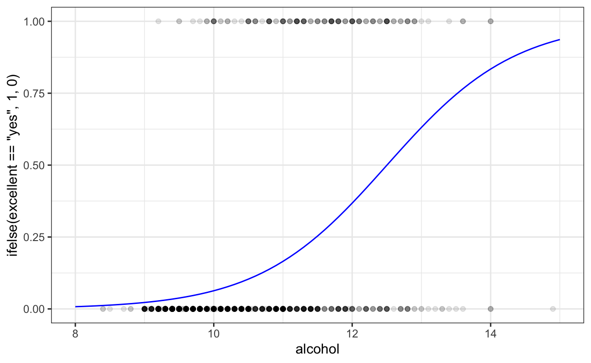

classification models
Does this unknown sample belong to group A or group B? Many laboratory questions have two possible answers rather than a number: does a blood sample point to the presence of a disease or not, will a batch pass inspection or not, is a wine one that tasters will rate as excellent or poor? Classification models answer questions of this kind. For each sample they estimate the probability that the answer is yes, and the user defines a cut-off turns that probability into a call. This chapter builds a classification model from one predictor and then from several, uses it to make calls for samples the model was never shown as it was built, shows how to determine which predictors matter most, and illustrates how to judge how well a set of calls hold up, including coverage of common pitfalls in model metrics.
One-page summary (PDF) Jump to the chapter summary

Choosing a classification analysis. This decision flowchart starts from the kind of response being predicted and ends at the functions to run and the results to read. Yellow boxes are questions about the response and the goal of the analysis and green boxes are recommended steps.
from numbers to categories
The regression chapter predicted numbers: a Valine abundance, a density, and so forth. However, many questions instead have a response that is a category, and the simplest case is a category with two values, yes or no. A model that predicts a category is a classification model.
This chapter works with the red wines in the wine_quality dataset. Each wine has a set of chemical measurements (its alcohol content, its acidity, its sulfur dioxide, its density, and so on) and a quality_score given by a panel of tasters. We will call a wine excellent if it scored 7 or more, and store that as a column of yes and no. We also give each wine a number, so that any one of them can be found again later:
red_wines <- wine_quality %>%
filter(type == "red") %>%
mutate(
wine = row_number(),
excellent = ifelse(quality_score >= 7, "yes", "no")
)
red_wines %>%
group_by(excellent) %>%
summarize(n = n())
## # A tibble: 2 × 2
## excellent n
## <chr> <int>
## 1 no 1382
## 2 yes 217Of the 1,599 red wines, 217 are excellent, about one in seven. So “yes” is the rare answer here. The concept of one category being rare will come back at the end of the chapter.
At this point one may ask: why not simply use the regression chapter’s tools? A linear model needs a number for its response, so we could code each excellent wine as 1 and every other wine as 0, then fit a straight line of that number against alcohol content:
red_wines_as_numbers <- red_wines %>%
mutate(excellent_number = ifelse(excellent == "yes", 1, 0))
straight_line_model <- buildModel(
data = red_wines_as_numbers,
model_type = "linear_regression",
predictors = "alcohol",
response = "excellent_number"
)A prediction from this line is meant to be read as the chance that a wine is excellent. Let’s see what the line predicts across a range of alcohol contents, from a weak 4% up to the 22% of a strong port:
alcohol_range <- data.frame(alcohol = seq(4, 22, by = 0.5))
straight_line_predictions <- predictWithModel(
data = alcohol_range,
model = straight_line_model
)
straight_line_predictions %>%
summarize(
lowest = min(predicted_excellent_number),
highest = max(predicted_excellent_number)
)
## # A tibble: 1 × 2
## lowest highest
## <dbl> <dbl>
## 1 -0.705 1.65
ggplot() +
geom_point(data = red_wines_as_numbers, aes(x = alcohol, y = excellent_number), alpha = 0.1) +
geom_line(data = straight_line_predictions, aes(x = alcohol, y = predicted_excellent_number), color = "red") +
geom_hline(yintercept = c(0, 1), linetype = "dashed") +
theme_bw()![A straight line fitted to a yes/no response runs outside the range a probability can take. Scatter plot with alcohol content (percent by volume) on the horizontal axis and whether a red wine is excellent, coded 1 for yes and 0 for no, on the vertical axis; each point is one wine, drawn faintly so that overlapping wines show as darker marks. The red line is a linear model of the 0/1 code on alcohol, carried out from 4 to 22 percent alcohol, and the dashed lines mark 0 and 1. Data: wine_quality, red wines only.](index_files/figure-html/unnamed-chunk-617-1.png)
A straight line fitted to a yes/no response runs outside the range a probability can take. Scatter plot with alcohol content (percent by volume) on the horizontal axis and whether a red wine is excellent, coded 1 for yes and 0 for no, on the vertical axis; each point is one wine, drawn faintly so that overlapping wines show as darker marks. The red line is a linear model of the 0/1 code on alcohol, carried out from 4 to 22 percent alcohol, and the dashed lines mark 0 and 1. Data: wine_quality, red wines only.
The line above has to pass through a cloud of 0s and 1s, and what it predicts is a number, not a category. In the middle, a reading such as 0.4 is unclear: does it mean the wine is probably not excellent, or that it has a 40% chance of being excellent? It’s hard to say. Worse, a straight line has no floor and no ceiling: extrapolated out from 4 to 22 percent alcohol, it falls below 0 at the weak end and goes past 1 at the strong end (no wine in the table is that strong, but a model should ideally still give a sensible answer), and neither of those values can be interpreted at all. The fix is a model built to give a probability and operate appropriately at extreme values: its predictions need to bend into an S-shape, close to 0 at one end, close to 1 at the other, and never beyond either, so a prediction of 0.4 means a 40% chance that the wine is excellent. That model is logistic regression, and it takes the yes/no column itself as its response, with no recoding to numbers. A logistic regression model predicts the probability of one of the two values. For a column of “yes” and “no”, buildModel() always models “yes”; for a column of TRUE and FALSE it models TRUE; for any other pair of words it models whichever comes second in alphabetical order. That is why the response columns in this chapter are written as yes and no.
a model from one predictor
Whenever we want to use a model to make predictions, we need to remember, at the outset, the way in which we estimate the accuracy of our predictions: (i) hold back some of the data and exclude it from training, then (ii) use that held back set to test how well the model does on data (wines, in the case of our example here) it was never shown. So, our data table needs a column saying which wines are used for building (the training wines) and which are held back for the test. Here, every fourth wine is held back:
red_wines <- red_wines %>%
mutate(record = ifelse(row_number() %% 4 == 0, "held back", "training"))
training_wines <- red_wines %>%
filter(record == "training")
held_back_wines <- red_wines %>%
filter(record == "held back")Marking the split with a column, rather than drawing rows at random each time, means everyone who runs this code holds back exactly the same wines and gets exactly the same answers. In many datasets (including the ones in this chapter’s exercises) the column comes with the data, and the only step is the filter(). The held-back wines are the test set, and from here on every model is built on training_wines alone.
A logistic regression model is built with buildModel(), the same function as in the regression chapter, with model_type = "logistic_regression". The predictors and the response are named exactly as before, and the response is the yes/no column:
alcohol_model <- buildModel(
data = training_wines,
model_type = "logistic_regression",
predictors = "alcohol",
response = "excellent"
)
alcohol_model$metrics %>%
filter(type == "coefficient")
## variable value std_err type
## 1 (Intercept) -13.471603 0.96287892 coefficient
## 2 alcohol 1.077528 0.08584569 coefficient
## p_value p_value_adj
## 1 1.770001e-44 3.540002e-44
## 2 3.879808e-36 3.879808e-36How does buildModel() choose the curve? For each training wine, a candidate curve gives a probability to what actually happened: its probability of yes for an excellent wine, and one minus that for any other wine. Multiplying these probabilities across all the training wines gives the curve’s likelihood, and buildModel() keeps the curve with the highest likelihood (the maximum-likelihood fit). It plays the part that least squares played for a straight line in the regression chapter: the best curve is the one under which the data we actually saw are most probable.
The alcohol coefficient is positive, so the model’s probability that a wine is excellent rises with its alcohol content. (Logistic regression coefficients are measured on a scale called the log-odds, not in probability units, so we read their sign and, after scaling, their size, rather than translating them into a change in probability.)
predictWithModel() works just as it did for regression, and adds two columns to whatever table it is given. probability_yes is the model’s probability that the response is “yes”, and predicted_class is the call the model makes from it, yes or no:
alcohol_predictions <- predictWithModel(
data = training_wines,
model = alcohol_model
)
alcohol_predictions %>%
select(wine, alcohol, excellent, probability_yes, predicted_class) %>%
head()
## # A tibble: 6 × 5
## wine alcohol excellent probability_yes predicted_class
## <int> <dbl> <chr> <dbl> <chr>
## 1 1 9.4 no 0.0341 no
## 2 2 9.8 no 0.0516 no
## 3 3 9.8 no 0.0516 no
## 4 5 9.4 no 0.0341 no
## 5 6 9.4 no 0.0341 no
## 6 7 9.4 no 0.0341 noTo read the probability for one wine, filter for it:
alcohol_predictions %>%
filter(wine == 10) %>%
select(wine, alcohol, probability_yes)
## # A tibble: 1 × 3
## wine alcohol probability_yes
## <int> <dbl> <dbl>
## 1 10 10.5 0.104Predicting across a range of alcohol contents shows the S-shape that the straight line could not give:
alcohol_curve <- predictWithModel(
data = data.frame(alcohol = seq(8, 15, by = 0.1)),
model = alcohol_model
)
ggplot() +
geom_point(data = training_wines, aes(x = alcohol, y = ifelse(excellent == "yes", 1, 0)), alpha = 0.1) +
geom_line(data = alcohol_curve, aes(x = alcohol, y = probability_yes), color = "blue") +
theme_bw()
A logistic regression model keeps its predicted probabilities between 0 and 1. Scatter plot with alcohol content (percent by volume) on the horizontal axis and the probability that a red wine is excellent on the vertical axis; each faint point is one training wine, placed at 1 if it is excellent and at 0 if it is not, and the blue line is the probability predicted by a logistic regression model of excellence on alcohol. Data: wine_quality, red wines in the training set.
several predictors, and predicting held-back cases
Alcohol is one of many measurements in the table. As with multiple regression, a classification model can use several predictors at once, we just name them all at build time:
wine_model <- buildModel(
data = training_wines,
model_type = "logistic_regression",
predictors = c("alcohol", "volatile_acidity", "sulphates", "total_sulfur_dioxide", "density"),
response = "excellent"
)Excellent. Now, the point of the held-back wines is that the model has never seen them. Giving them to predictWithModel() asks the model for a probability and a call for each one, exactly as it would for wines that have not yet been tasted:
held_back_predictions <- predictWithModel(
data = held_back_wines,
model = wine_model
)
held_back_predictions %>%
select(wine, excellent, probability_yes, predicted_class) %>%
head()
## # A tibble: 6 × 4
## wine excellent probability_yes predicted_class
## <int> <chr> <dbl> <chr>
## 1 4 no 0.0524 no
## 2 8 yes 0.0220 no
## 3 12 no 0.0592 no
## 4 16 no 0.00913 no
## 5 20 no 0.128 no
## 6 24 no 0.0136 noGood! Next, how does a probability become a call? Through a cut-off. predictWithModel() calls a wine “yes” when its probability_yes is 0.5 or more, and “no” otherwise. We can count how many held-back wines fall on each side:
held_back_predictions %>%
group_by(predicted_class) %>%
summarize(n = n())
## # A tibble: 2 × 2
## predicted_class n
## <chr> <int>
## 1 no 370
## 2 yes 29
ggplot(held_back_predictions, aes(x = alcohol, y = probability_yes, color = excellent)) +
geom_point() +
geom_hline(yintercept = 0.5, linetype = "dashed") +
theme_bw()![Each held-back wine's predicted probability of being excellent, against the 0.5 cut-off. Scatter plot with alcohol content (percent by volume) on the horizontal axis and the probability that the wine is excellent, from a logistic regression model on five chemical predictors, on the vertical axis; color shows whether the tasters rated the wine excellent, and the dashed line marks the 0.5 cut-off above which the model calls a wine excellent. Each point is one held-back red wine. Data: wine_quality, red wines in the held-back set.](index_files/figure-html/unnamed-chunk-626-1.png)
Each held-back wine’s predicted probability of being excellent, against the 0.5 cut-off. Scatter plot with alcohol content (percent by volume) on the horizontal axis and the probability that the wine is excellent, from a logistic regression model on five chemical predictors, on the vertical axis; color shows whether the tasters rated the wine excellent, and the dashed line marks the 0.5 cut-off above which the model calls a wine excellent. Each point is one held-back red wine. Data: wine_quality, red wines in the held-back set.
Nothing about 0.5 is fixed. It is a natural default (call yes when yes is more likely than not), but a winery hunting for every excellent wine might rather call yes at a lower probability, and accept that some of those calls will be wrong. predictWithModel() has no argument for the cut-off, but we can still move the cut-off using mutate() on the probability column, then writing a new call from probability_yes:
held_back_predictions %>%
mutate(called_at_0.3 = ifelse(probability_yes >= 0.3, "yes", "no")) %>%
group_by(called_at_0.3) %>%
summarize(n = n())
## # A tibble: 2 × 2
## called_at_0.3 n
## <chr> <int>
## 1 no 338
## 2 yes 61A lower cut-off calls more wines yes, and a higher one calls fewer wines yes. The probabilities themselves do not change: only the line drawn across them moves.
which predictors matter most
With several predictors in the model, a natural question is which of them drives the probability most strongly. In the regression chapter we met that same question (and the associated trap and its fix, which carries over to classification unchanged. Here are the coefficients of the five-predictor model, ranked by size:
wine_model$metrics %>%
filter(type == "coefficient", variable != "(Intercept)") %>%
arrange(desc(abs(value)))
## variable value std_err type
## 1 density 14.92792540 55.707270516 coefficient
## 2 sulphates 3.35812659 0.576221181 coefficient
## 3 volatile_acidity -3.33114501 0.664929422 coefficient
## 4 alcohol 1.01902574 0.110519870 coefficient
## 5 total_sulfur_dioxide -0.01401004 0.004086754 coefficient
## p_value p_value_adj
## 1 7.887217e-01 1.000000e+00
## 2 5.614835e-09 2.807418e-08
## 3 5.449447e-07 2.179779e-06
## 4 2.962855e-20 1.777713e-19
## 5 6.076894e-04 1.823068e-03These raw coefficients mostly reflect units. Density barely changes from one wine to the next, so a change of one whole gram per milliliter is far larger than any difference between two wines in the table, and its coefficient is the largest of the five for that reason alone. Total sulfur dioxide is the opposite: it is measured in milligrams per liter and spreads over a range of a hundred or more, so one unit of it is a tiny change and its coefficient is tiny. Ranking these numbers ranks the units, not the predictors.
The fix is the same as in the regression chapter: scale each predictor to a mean of zero and a standard deviation of one before fitting (scaling is introduced in the distances and scaling chapter), with scale_variance = TRUE. Each coefficient then describes a one-standard-deviation change in its predictor, which is comparable across predictors:
scaled_wine_model <- buildModel(
data = training_wines,
model_type = "logistic_regression",
predictors = c("alcohol", "volatile_acidity", "sulphates", "total_sulfur_dioxide", "density"),
response = "excellent",
scale_variance = TRUE
)
scaled_wine_model$metrics %>%
filter(type == "coefficient", variable != "(Intercept)") %>%
arrange(desc(abs(value)))
## variable value std_err type
## 1 alcohol 1.09173405 0.11840555 coefficient
## 2 volatile_acidity -0.59369471 0.11850732 coefficient
## 3 sulphates 0.54458762 0.09344583 coefficient
## 4 total_sulfur_dioxide -0.45069272 0.13146786 coefficient
## 5 density 0.02818328 0.10517291 coefficient
## p_value p_value_adj
## 1 2.962855e-20 1.481428e-19
## 2 5.449447e-07 1.634834e-06
## 3 5.614835e-09 2.245934e-08
## 4 6.076894e-04 1.215379e-03
## 5 7.887217e-01 7.887217e-01After scaling, the ranking no longer follows the units: each coefficient is the change in log-odds for a one-standard-deviation change in that predictor, so the predictor at the top of this list is the one that moves the probability most. Three further points:
- The ranking uses the size of each coefficient,
abs(value), because the sign only gives the direction. A negative coefficient, such as the one on volatile acidity, means the probability of yes falls as that predictor rises, and it can matter just as much as a positive one. - As in linear regression, scaling changes the units of the coefficients, not the model. The scaled and unscaled models give every wine the same probability, and
predictWithModel()scales a new table with the training wines’ means and standard deviations, so the held-back wines go in as measured. - Scaling the predictor columns by hand with
mutate(across(c(...), scale))beforebuildModel()gives the same coefficients, provided it is done on the training rows. It is a sound way to rank predictors, but a model built that way then needs every new table scaled with the training rows’ means and standard deviations before it can predict, soscale_variance = TRUEis the safer route when the model will also be used for predictions.
A bar chart shows the same ranking at a glance. Plot the size of each scaled coefficient, abs(value), so that a strong negative predictor stands as long as an equally strong positive one:
scaled_wine_coefficients <-scaled_wine_model$metrics %>%
filter(type == "coefficient", variable != "(Intercept)")
ggplot(scaled_wine_coefficients, aes(x = abs(value), y = reorder(variable, abs(value)))) + geom_col()![Scaled coefficients rank five chemical predictors by how strongly they move the probability that a red wine is excellent. Horizontal bar chart with the size of each scaled coefficient, in log-odds per one standard deviation of the predictor, on the horizontal axis and the predictor on the vertical axis; each bar is one of the five predictors in a logistic regression model of whether a red wine is excellent, and its length is the absolute value of that predictor's scaled coefficient, so a predictor that lowers the probability of excellent has a bar as long as one that raises it equally. Bars are ordered by length. Data: wine_quality, red wines in the training set.](index_files/figure-html/unnamed-chunk-630-1.png)
Scaled coefficients rank five chemical predictors by how strongly they move the probability that a red wine is excellent. Horizontal bar chart with the size of each scaled coefficient, in log-odds per one standard deviation of the predictor, on the horizontal axis and the predictor on the vertical axis; each bar is one of the five predictors in a logistic regression model of whether a red wine is excellent, and its length is the absolute value of that predictor’s scaled coefficient, so a predictor that lowers the probability of excellent has a bar as long as one that raises it equally. Bars are ordered by length. Data: wine_quality, red wines in the training set.
judging a classifier on held-back cases
A classification model is judged by its calls on the held-back data (wines, in this case). The obvious first number is accuracy, the share of calls that are correct:
held_back_predictions %>%
summarize(accuracy = mean(predicted_class == excellent))
## # A tibble: 1 × 1
## accuracy
## <dbl>
## 1 0.897predicted_class == excellent is TRUE for every wine the model called correctly, and the mean of a column of TRUE and FALSE is the share that are TRUE.
However, accuracy alone can mislead, and this dataset is an example of how that can happen. Consider a “model” that ignores the chemistry and calls every wine “no”:
held_back_predictions %>%
mutate(always_no = "no") %>%
summarize(
model_accuracy = mean(predicted_class == excellent),
always_no_accuracy = mean(always_no == excellent)
)
## # A tibble: 1 × 2
## model_accuracy always_no_accuracy
## <dbl> <dbl>
## 1 0.897 0.885Only 46 of the 399 held-back wines are excellent, so calling every wine “no” is right for the other 353: an accuracy of about 88%, from a rule that has no basis in anything to do with the wine. Whenever “yes” is rare, the always-“no” rule scores a high accuracy, and a real model’s accuracy has to be read against it.
What the always-“no” rule cannot do is find excellent wine. So the second question to ask of a classifier is about the yes cases themselves. Of the held-back wines that really are excellent, how many did the model catch (call yes), and how many did it miss (call no)?
held_back_predictions %>%
filter(excellent == "yes") %>%
summarize(
excellent_wines = n(),
caught = sum(predicted_class == "yes"),
missed = sum(predicted_class == "no")
)
## # A tibble: 1 × 3
## excellent_wines caught missed
## <int> <int> <int>
## 1 46 17 29The always-“no” rule catches none of these 46 wines and misses all of them, however high its accuracy. Two classifiers with almost the same accuracy can differ completely here, and a model that catches some of the excellent wines is almost certainly far more useful than one that catches none. The caught and missed counts are what show the difference. So an analyst should report caught and missed beside accuracy, never just accuracy alone.
Caught and missed describe only the wines that really are excellent. The ordinary wines can be called correctly or incorrectly too, and putting all four types of counts together gives the standard summary of a classifier’s performance: the confusion matrix. It is a two-by-two table that sorts every held-back case by reality (the rows) and what the model called (the columns):
| called no | called yes | |
|---|---|---|
| really no | correctly called no (true negative) | false alarm (false positive) |
| really yes | missed (false negative) | caught (true positive) |
(The table is in the order R prints it below, “no” before “yes”; many other texts put yes first, so always check the labels rather than the position when working with confusion matrices.) The two cells on the diagonal are the right calls, and the other two are the two different kinds of mistake. A false alarm (false positive) is an ordinary wine called excellent; a miss is an excellent wine called ordinary (false negative). Counting the held-back wines by both columns at once, then spreading the calls across the columns, builds the confusion matrix:
held_back_predictions %>%
group_by(excellent, predicted_class) %>%
summarize(n = n(), .groups = "drop") %>%
pivot_wider(names_from = predicted_class, values_from = n, names_prefix = "called_")
## # A tibble: 2 × 3
## excellent called_no called_yes
## <chr> <int> <int>
## 1 no 341 12
## 2 yes 29 17Accuracy is the two diagonal cells divided by all four. Two other numbers come from the matrix, and each answers a sharper question than accuracy does:
- Recall is caught ÷ (caught + missed): of the cases that really are yes, the share the model caught. A model with high recall rarely misses an excellent wine.
- Precision is caught ÷ (caught + false alarms): of the cases the model called yes, the share that really are yes. A model with high precision is usually right when it says “excellent.”
held_back_predictions %>%
summarize(
caught = sum(excellent == "yes" & predicted_class == "yes"),
missed = sum(excellent == "yes" & predicted_class == "no"),
false_alarms = sum(excellent == "no" & predicted_class == "yes"),
recall = caught / (caught + missed),
precision = caught / (caught + false_alarms)
)
## # A tibble: 1 × 5
## caught missed false_alarms recall precision
## <int> <int> <int> <dbl> <dbl>
## 1 17 29 12 0.370 0.586The always-“no” rule has a recall of zero, since it catches nothing, and no precision at all: it never calls a wine excellent, so there are no yes calls to be right about (R reports this as NaN, “not a number”).
The cut-off from earlier in the chapter moves these numbers in opposite directions. Lowering it calls more wines excellent, which catches more of the excellent wines (recall rises) but also produces more false alarms (precision falls):
held_back_predictions %>%
filter(excellent == "yes") %>%
summarize(
caught_at_0.5 = sum(probability_yes >= 0.5),
caught_at_0.3 = sum(probability_yes >= 0.3)
)
## # A tibble: 1 × 2
## caught_at_0.5 caught_at_0.3
## <int> <int>
## 1 17 26Raising the cut-off does the opposite: fewer, surer yes calls, with higher precision and lower recall. Where to put the cut-off depends on what a miss costs compared with a false alarm. A missed excellent wine is a lost sale, but a missed disease is a missed diagnosis, so a medical screen favors recall while a winery choosing which bottles to put its premium label on likely favors precision.
concept check
Fill in the blank with the value that keeps only the wines that really are excellent, then press Run to count how many the model caught and missed.
Self-check: a rule that calls every held-back wine “no” scores an accuracy of about 88%. What does that show?
Self-check: a winery wants to find as many of its excellent wines as possible, even if some ordinary wines get called excellent along the way. Which number should it watch, and which way should it move the cut-off?
chapter summary
Download this summary as a one-page PDF
A yes/no response needs a classification model, not a straight line: a straight line’s predictions run below 0 and above 1. Set data aside first: filter on the column that marks training and held-back rows, build every model on the training rows only, and keep the held-back rows (the test set) for judging. Read the output: probability_yes is the model’s probability of yes, and predicted_class is the call at a cut-off of 0.5. Move the cut-off with a mutate() on the probability, knowing that a lower cut-off catches more yes cases and makes more false alarms. Rank predictors only after scaling, by the size of the coefficient, because raw coefficients mostly reflect units. Judge on the held-back rows, and never on accuracy alone: when yes is rare, calling everything “no” scores a high accuracy and catches nothing, so report how many yes cases were caught and how many were missed. The confusion matrix holds all four counts; a lower cut-off raises recall and lowers precision.
| Function or step | What it is for | What we set or vary |
|---|---|---|
filter(record == "training") |
splitting the data into training rows and held-back rows by a column, not at random | the column and its two values |
buildModel() |
fitting a logistic regression model to a yes/no response |
data (training rows), model_type = "logistic_regression", predictors (one or more), response
|
predictWithModel() |
a probability and a call for every row of any table with the same predictor columns |
data (e.g. the held-back rows), model; adds probability_yes and predicted_class
|
mutate(ifelse(probability_yes >= ...)) |
moving the cut-off | the cut-off value |
buildModel(scale_variance = TRUE) |
comparing coefficients across predictors |
TRUE to rank predictors; rank with arrange(desc(abs(value)))
|
summarize(mean(predicted_class == response)) |
accuracy | compare against calling every row “no” |
filter(response == "yes") + summarize(sum(...))
|
the yes cases caught and missed | which call counts as caught ("yes") or missed ("no") |
group_by(response, predicted_class) + summarize(n = n())
|
the confusion matrix, then precision and recall | recall = caught ÷ (caught + missed); precision = caught ÷ (caught + false alarms) |
further reading
An Introduction to Statistical Learning. A free textbook whose classification chapter introduces logistic regression, the choice of a cut-off and the trade-off between catching yes cases and making false alarms, with worked examples in R.
Classification, Google Machine Learning Crash Course. A short interactive module on thresholds, accuracy and its limits with imbalanced classes, and the confusion matrix, precision and recall.
Wine Quality dataset, UCI Machine Learning Repository. The source of this chapter’s red wines: physicochemical measurements and tasters’ scores for Portuguese vinho verde wines, with the original study that modeled the scores.